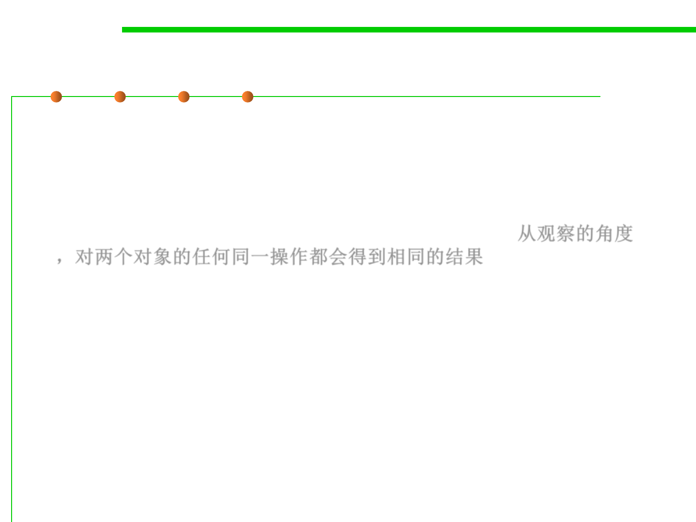

Using observation
3.5 Equality in ADT and OOP
▪ A third way we can talk about the equality between abstract values is
in terms of what an outsider (a client) can observe about them:
▪ Using observation. We can say that two objects are equal when
they cannot be distinguished by observation – every operation we
can apply produces the same result for both objects. 从观察的角度
，对两个对象的任何同一操作都会得到相同的结果
– Consider the set expressions {1,2} and {2,1}. Using the observer
operations available for sets, cardinality基数 |…| and membership ∈,
these expressions are indistinguishable:
• |{1,2}| = 2 and |{2,1}| = 2
• 1 ∈ {1,2} is true, and 1 ∈ {2,1} is true
• 2 ∈ {1,2} is true, and 2 ∈ {2,1} is true
• 3 ∈ {1,2} is false, and 3 ∈ {2,1} is false
▪ In terms of ADT, “observation” means calling operations on the
objects. So two objects are equal if and only if they cannot be
distinguished by calling any operations of the abstract data type.